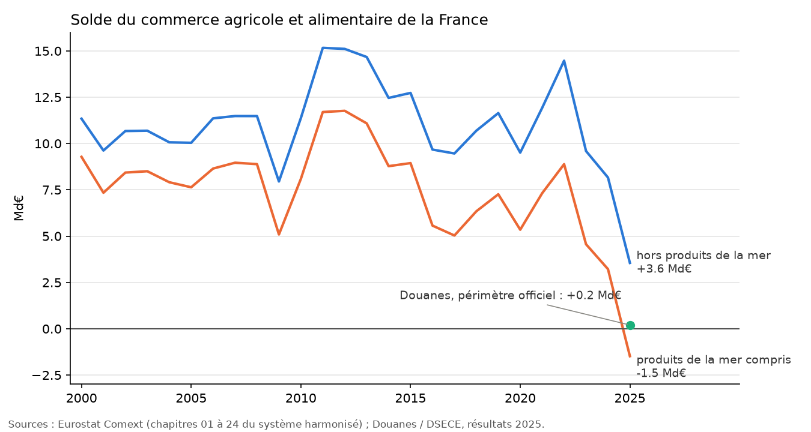

← Tous les thèmes · 12 sur 16
Agriculture
Le diagnostic économique tient ; deux chiffres sociaux qu'il répète sont très au-dessus de la réalité.
- ✓Exact 1
- ≈Proche 3
- ✕Inexact 2
- ?Invérifiable 2
- ◆Opinion ou promesse 1
8 affirmations et 1 mesure · 9 sources
1Ce qu'il dit
Ses mots, avant toute vérification. Les étiquettes numérotées renvoient à l'affirmation vérifiée plus bas, sous le même numéro.
Diagnostic
Le décrochage d'une puissance agricole
- « pour la première fois depuis 1978, nous sommes déficitaires sur le plan de l'agroalimentaire » ;
- l'excédent serait passé de « 10,4 milliards d'euros en 2022 » à « 200 millions en 2025 », avec des importations « en hausse de 8,5 % sur un an » ;
- la France importerait « plus du double de denrées alimentaires aujourd'hui qu'en l'an 2000, soit 63 milliards d'euros ».
Des agriculteurs appauvris et désespérés
- « en trente ans, le revenu net agricole a diminué de 40 % » ;
- « presque 40 % des agriculteurs » vivraient sous le seuil de pauvreté, ou « un agriculteur sur quatre » selon les interventions ;
- « 7 fois plus de suicides chez les agriculteurs que la moyenne des Français ».
Des charges et des normes excessives
- « les cotisations sociales […] c'est 45 % du revenu des agriculteurs. En Allemagne, c'est 30 % » ;
- « neuf heures par semaine à remplir des formulaires » ;
- « 454 matières actives autorisées en Europe contre seulement 309 en France » (2021) ;
- une PAC devenue « une vaste politique environnementale ».
Une dépendance aux intrants
2,2 millions de tonnes d'engrais azotés consommés, « importées à 80–90 % » selon un message, « 70 % des azotés » selon un autre. La future taxe carbone aux frontières (MACF) coûterait « plus de 750 millions d'euros par an ».
Mesures proposées
| Mesure | Ce qu'il en dit | Vérifié plus bas |
|---|---|---|
| Supprimer les impôts de production pesant sur l'agriculture | « qui pénalisent l'agriculture française » | ◆9Promesse |
| TVA « compétitivité / relocalisation » | portée progressivement en 12 ans à un taux unique, « par exemple de 25 % » (programme) | — |
| Assurance récolte par capitalisation | « face aux aléas climatiques » (avec Yves d'Amécourt) | — |
| Retirer le principe de précaution de la Constitution | « au profit d'un principe de responsabilité » | — |
| Stockage de l'eau, filière française d'engrais « décarbonés » grâce au nucléaire | — | — |
| Refonder un « ministère de la production » agricole | — | — |
2Ce que disent les chiffres
Une carte par affirmation : l'étiquette dit en quoi la phrase s'écarte des chiffres, la ligne en dessous dit pourquoi. Ouvrir une carte pour lire la citation exacte, l'explication, le calcul et les sources.
1≈Périmètres mélangés« Pour la première fois depuis 1978, nous sommes déficitaires sur le plan de l'agroalimentaire » (entretien vidéo, 26/10/2026)Selon les Douanes, le solde de 2025 reste très légèrement positif (+0,2 Md€). Il ne devient négatif qu'en comptant les produits de la mer.
« Pour la première fois depuis 1978, nous sommes déficitaires sur le plan de l'agroalimentaire. »
David Lisnard, youtube : Un grand entretien avec David Lisnard: "Nous sommes pollués par les normes...", 26 octobre 2026 · voir la source
≈Périmètres mélangés
Le chiffre existe, mais il ne mesure pas ce que dit la phrase, ou il est comparé à un chiffre qui ne couvre pas la même chose.
Proche Confiance : forte
Pourquoi
- Selon les Douanes, le solde agricole et agroalimentaire de 2025 reste très légèrement positif : +0,2 Md€, un « point bas historique ». Il était de +7,7 Md€ en 2019.
- En comptant les produits de la mer, il devient négatif. L'Académie d'agriculture écrit : « en 2025, pour la première fois depuis 1978, le solde agroalimentaire a été déficitaire, si l'on inclut les produits de la mer ».
- Sur les chapitres 01 à 24 des Douanes européennes, le solde de 2025 est de −1,5 Md€, le premier solde négatif depuis 2000.
- Hors produits de la mer, il est de +3,6 Md€.
- Lisnard a donc raison sur le fond. Mais il présente comme un fait un déficit qui n'apparaît qu'avec le périmètre le plus large. Avec le périmètre officiel, il reste un excédent minuscule.

Le calcul
Solde et importations agroalimentaires
- Entrées :
TRESOR-COMMERCE-2025: résultats officiels des Douanes, solde agricole et agroalimentaire de +0,2 Md€ en 2025 et de +7,7 Md€ en 2019 ;ACADEMIE-AGRI-COMMERCE: déficit en 2025 « si l'on inclut les produits de la mer », une première depuis 1978 ;COMEXT-AGROALIMENTAIRE: importations (flux 1) et exportations (flux 2) de la France, tous partenaires, pour les chapitres 01 à 24 du système harmonisé et les positions 1604-1605 (préparations de poisson et de crustacés).
- Calculs :
- solde = exportations − importations, sommées sur les chapitres 01 à 24 ;
- « hors produits de la mer » : on retire le chapitre 03 et les positions 1604 et 1605 des deux flux ;
- hausse des importations 2025 / 2024.
- Limite : le périmètre officiel des Douanes, la nomenclature de produits CPF, n'est pas celui des chapitres 01 à
- Les niveaux diffèrent donc de quelques milliards d'euros. Les tendances, elles, concordent.
Résultats du calcul
Ce qu'il dit : déficitaire
| Mesure | Cas | Valeur | Remarque |
|---|---|---|---|
| Solde des produits agricoles et agroalimentaires | Douanes, périmètre officiel | 0,2 Md€ | « point bas historique » ; 7.7 Md€ en 2019 |
| Solde commercial | chapitres 01 à 24, produits de la mer compris | −1,48 Md€ | premier solde négatif de la série (depuis 2000) ; l'Académie d'agriculture date le précédent de 1978 |
| Solde commercial | chapitres 01 à 24, hors produits de la mer | 3,55 Md€ |
Les sources (3)
- AEurostat (Comext, données des Douanes) · Commerce de la France, chapitres 01 à 24 du système harmonisé et positions 1604-1605 (ds-045409) · relevé le 14/11/2026 ·
COMEXT-AGROALIMENTAIRE - AMinistère de l'Économie et ministère de l'Europe (Douanes / DSECE) · Résultats du commerce extérieur en 2025 (6 février 2026) · relevé le 14/11/2026 ·
TRESOR-COMMERCE-2025 - CAcadémie d'agriculture de France (T. Pouch, d'après Douanes et Agreste) · Le commerce extérieur agroalimentaire français, fiche révisée en août 2026 · relevé le 14/11/2026 ·
ACADEMIE-AGRI-COMMERCE
2✓Exact« La France importe plus du double de denrées alimentaires aujourd'hui qu'en l'an 2000, soit 63 milliards d'euros » (Atlantico, 05/03/2023)Les importations ont été multipliées par 2,7 à 2,8 entre 2000 et 2022, en euros courants : une partie de la hausse vient des prix.
« La France importe plus du double de denrées alimentaires aujourd’hui qu’en l’an 2000, soit 63 milliards d’euros. »
David Lisnard, tribune, Ce qui est bon pour les agriculteurs est bon pour les Français, 5 mars 2023
✓Exact
Confirmé par les données publiques.
Exact Confiance : moyenne
Pourquoi
- En euros courants, les importations des chapitres 01 à 24 ont été multipliées par 2,7 entre 2000 et 2022, de 27,9 à 75,0 Md€.
- Hors produits de la mer et tabac, elles ont été multipliées par 2,8, à 65,8 Md€, proche de ses 63 Md€. L'écart tient au périmètre.
- Ce sont des euros courants. Une partie de la hausse vient des prix, notamment en 2022.
Le calcul
Importations depuis 2000
- Entrée :
COMEXT-AGROALIMENTAIRE. - Calcul : importations 2022 / importations 2000, en euros courants, pour les chapitres 01 à 24, puis hors produits de la mer et hors tabac (chapitre 24).
- Limite : les euros sont courants, sans correction de l'inflation.
Résultats du calcul
Ce qu'il dit : 63 Md€ · « plus du double »
| Mesure | Cas | Valeur | Remarque |
|---|---|---|---|
| Importations agricoles et alimentaires | chapitres 01 à 24, 2022 | 75,02 Md€ | |
| Rapport des importations 2022 / 2000 (euros courants) | chapitres 01 à 24, 2022 / 2000 | 2,69 fois | 2000 : 27.9 Md€ |
| Importations agricoles et alimentaires | hors produits de la mer et tabac, 2022 | 65,83 Md€ | |
| Rapport des importations 2022 / 2000 (euros courants) | hors produits de la mer et tabac, 2022 / 2000 | 2,84 fois | 2000 : 23.1 Md€ |
Les sources (1)
- AEurostat (Comext, données des Douanes) · Commerce de la France, chapitres 01 à 24 du système harmonisé et positions 1604-1605 (ds-045409) · relevé le 14/11/2026 ·
COMEXT-AGROALIMENTAIRE
3≈Plutôt exact« L'excédent agroalimentaire atteignait 10,4 milliards d'euros en 2022. Il est tombé à 4,9 milliards en 2024, puis à 200 millions en 2025 […] Les importations […] en hausse de 8,5 % sur un an » (27/02/2026)Le chiffre de 2025 et la hausse des importations sont exacts. Ses niveaux de 2022 et 2024 n'ont pas pu être recoupés au même périmètre, mais la chute qu'il décrit est réelle.
« L’excédent agroalimentaire atteignait 10,4 milliards d’euros en 2022. Il est tombé à 4,9 milliards en 2024, puis à 200 millions en 2025,aux portes du déficit ! Les importations agroalimentaires ont bondi à plus de 64 milliards, en hausse de 8,5 % sur un an. »
David Lisnard, articles : « Les agriculteurs ne demandent pas la charité mais la liberté d'entreprendre et une juste, 27 février 2026 · voir la source
≈Plutôt exact
Le bon ordre de grandeur ; un arrondi, une date ou un détail diffère.
Proche Confiance : moyenne
Pourquoi
- Le chiffre de 2025 (200 millions) est exactement celui des Douanes (+0,2 Md€).
- La hausse des importations, +8,4 % en 2025 sur les chapitres 01 à 24, correspond à ses 8,5 %.
- Ses niveaux de 2022 (10,4 Md€) et de 2024 (4,9 Md€) n'ont pas pu être confrontés au périmètre officiel. Sur les chapitres 01 à 24, on trouve 8,9 et 3,2 Md€, ou 14,5 et 8,2 Md€ hors produits de la mer. La chute qu'il décrit est réelle.
Le calcul
Solde et importations agroalimentaires
- Entrées :
TRESOR-COMMERCE-2025: résultats officiels des Douanes, solde agricole et agroalimentaire de +0,2 Md€ en 2025 et de +7,7 Md€ en 2019 ;ACADEMIE-AGRI-COMMERCE: déficit en 2025 « si l'on inclut les produits de la mer », une première depuis 1978 ;COMEXT-AGROALIMENTAIRE: importations (flux 1) et exportations (flux 2) de la France, tous partenaires, pour les chapitres 01 à 24 du système harmonisé et les positions 1604-1605 (préparations de poisson et de crustacés).
- Calculs :
- solde = exportations − importations, sommées sur les chapitres 01 à 24 ;
- « hors produits de la mer » : on retire le chapitre 03 et les positions 1604 et 1605 des deux flux ;
- hausse des importations 2025 / 2024.
- Limite : le périmètre officiel des Douanes, la nomenclature de produits CPF, n'est pas celui des chapitres 01 à
- Les niveaux diffèrent donc de quelques milliards d'euros. Les tendances, elles, concordent.
Résultats du calcul
Ce qu'il dit : 10,4 Md€ · 4,9 Md€ · +8,5 %
| Mesure | Cas | Valeur | Remarque |
|---|---|---|---|
| Solde commercial agroalimentaire | 2022, chapitres 01 à 24 | 8,88 Md€ | hors produits de la mer : 14.5 Md€ ; périmètre différent de celui des Douanes |
| Solde commercial agroalimentaire | 2024, chapitres 01 à 24 | 3,22 Md€ | hors produits de la mer : 8.2 Md€ ; périmètre différent de celui des Douanes |
| Hausse des importations agroalimentaires | 2025 / 2024, chapitres 01 à 24 | 8,43 % | niveau 2025 : 85.7 Md€ (Lisnard : « plus de 64 milliards », autre périmètre) |
Les sources (2)
- AEurostat (Comext, données des Douanes) · Commerce de la France, chapitres 01 à 24 du système harmonisé et positions 1604-1605 (ds-045409) · relevé le 14/11/2026 ·
COMEXT-AGROALIMENTAIRE - AMinistère de l'Économie et ministère de l'Europe (Douanes / DSECE) · Résultats du commerce extérieur en 2025 (6 février 2026) · relevé le 14/11/2026 ·
TRESOR-COMMERCE-2025
4✕Chiffre grossi« Il y a 7 fois plus de suicides chez les agriculteurs que la moyenne des Français » (Europe 1, 16/12/2025)La surmortalité par suicide des exploitants est réelle et grave, mais elle est de 12 à 28 % au-dessus de la population générale : 1,1 à 1,3 fois, pas 7 fois.
« Juste, il y a 7 fois plus de suicides chez les agriculteurs que la moyenne des Français. »
David Lisnard, entretien, Europe 1, 16 décembre 2025 · voir la source
✕Chiffre grossi
La réalité va dans le même sens, mais le chiffre réel est nettement plus faible.
Inexact Confiance : forte
- Ce qu'il annonce
- Données publiques
Pourquoi
- Le ministère de l'Agriculture, citant la MSA, fait état d'une « surmortalité par suicide comprise entre 22 et 28 % par rapport à la population générale » chez les exploitants.
- L'étude de la MSA sur 2015 trouve un risque supérieur d'environ 12 % pour l'ensemble des affiliés.
- L'excès de risque est réel et grave, particulièrement chez les éleveurs de bovins de 45 à 54 ans. Mais le risque est 1,1 à 1,3 fois celui de la population, pas 7 fois.
- Le chiffre a été repris dans le titre de l'entretien.
Le calcul
Suicide des agriculteurs
- Entrées :
AN-QE102524-SUICIDE: réponse du ministère de l'Agriculture, qui cite une surmortalité par suicide des exploitants de 22 à 28 % (MSA, années 2007-2011) ;AN-QE23624-SUICIDE-MSA: étude de la MSA, risque supérieur d'environ 12 % en 2015 ;SPF-BEH-2018-SUICIDE: contexte.
- Calcul : une surmortalité de 28 % correspond à 1,28 fois le risque moyen ; « 7 fois plus » correspondrait à +600 %.
- Limite : les publications de Santé publique France sur les exploitants n'ont pas pu être téléchargées : le site renvoie une page HTML au lieu du PDF.
Résultats du calcul
Ce qu'il dit : « 7 fois plus » (+600 %) · « 7 fois plus »
| Mesure | Cas | Valeur | Remarque |
|---|---|---|---|
| Surmortalité par suicide par rapport à la population générale (borne haute) | exploitants, MSA | 28,0 % | fourchette de 22 à 28 % ; soit 1,2 à 1,3 fois le risque moyen |
| Risque de suicide supérieur à celui des assurés du régime général | affiliés MSA, 2015 | 12,0 % | chiffre de la MSA rapporté dans une question écrite |
Les sources (3)
- AAssemblée nationale (réponse du ministère de l'Agriculture) · Question écrite n° 102524 (XIVe législature) : surmortalité par suicide des exploitants agricoles · relevé le 14/11/2026 ·
AN-QE102524-SUICIDE - ASanté publique France (Bulletin épidémiologique hebdomadaire n° 27, 2018) · Mortalité par suicide des salariés agricoles affiliés à la MSA ; rappel de l'étude sur les exploitants 2007-2011 · relevé le 14/11/2026 ·
SPF-BEH-2018-SUICIDE - CAssemblée nationale (question citant l'étude de la MSA) · Question écrite n° 23624 (XVe législature) : risque de suicide supérieur d'environ 12 % en 2015 · relevé le 14/11/2026 ·
AN-QE23624-SUICIDE-MSA
5✕Chiffre grossi« On a presque 40 % des agriculteurs qui sont en dessous du seuil de pauvreté » (Europe 1, 16/12/2025)17,7 % des exploitants vivaient sous le seuil de pauvreté en 2020, contre 14,4 % pour l'ensemble de la population.
« On a presque 40% des agriculteurs qui sont en dessous du seuil de pauvreté. »
David Lisnard, entretien, Europe 1, 16 décembre 2025 · voir la source
✕Chiffre grossi
La réalité va dans le même sens, mais le chiffre réel est nettement plus faible.
Inexact Confiance : forte
- Ce qu'il annonce
- Données publiques
- Point de comparaison
Pourquoi
- Selon l'Insee et le service statistique du ministère, 17,7 % des exploitants vivaient sous le seuil de pauvreté monétaire en 2020, contre 14,4 % pour l'ensemble de la population.
- Ses autres versions, « un agriculteur sur quatre » en février et septembre 2026, surestiment aussi, mais moins.
- Le constat qualitatif est juste : les exploitants sont plus souvent pauvres que la moyenne, surtout quand le conjoint travaille sur l'exploitation (21,9 %).
Ses autres formulations (1)
- « Un agriculteur sur quatre vit sous le seuil de pauvreté » (27/02/2026 et 03/09/2026)
Le calcul
Pauvreté des exploitants
- Entrée :
INSEE-PAUVRETE-EXPLOITANTS(Insee et SSP, données 2020) : 17,7 % des exploitants sous le seuil de pauvreté monétaire, contre 14,4 % dans l'ensemble de la population. Aucun calcul.
Résultats du calcul
Ce qu'il dit : « presque 40 % » ; « un sur quatre »
| Mesure | Cas | Valeur | Remarque |
|---|---|---|---|
| Taux de pauvreté monétaire | exploitants, 2020 | 17,7 % | ensemble de la population : 14.4 % |
Les sources (1)
- AInsee et ministère de l'Agriculture (SSP), Insee Première · Les exploitants agricoles vivent plus souvent sous le seuil de pauvreté que l'ensemble de la population (données 2020) · relevé le 14/11/2026 ·
INSEE-PAUVRETE-EXPLOITANTS
6≈Contexte manquant« En trente ans, le revenu net agricole a diminué de 40 % » (Foire de Châlons, 03/09/2026)Le revenu total de la branche a bien reculé de 35 à 48 % en trente ans. Mais il y a beaucoup moins d'agriculteurs : par actif, le revenu réel a augmenté de 22 à 51 %.
« En trente ans, le revenu net agricole a diminué de 40 %. »
David Lisnard, articles : À la Foire de Châlons, David Lisnard défend une agriculture libérée des impôts de producti, 3 septembre 2026 · voir la source
≈Contexte manquant
Le chiffre est juste, mais il manque l'élément qui change la lecture : année de départ choisie, cas extrême, méthode non dite.
Proche Confiance : forte
Pourquoi
- Le revenu net d'entreprise agricole total, corrigé de l'inflation (indicateur C d'Eurostat), a reculé de 48 % entre 1994 et 2024, et de 35 % entre 1995 et 2025. Le chiffre varie beaucoup selon l'année d'arrivée.
- Mais il y a beaucoup moins d'agriculteurs. Par actif non salarié (indicateur B), le revenu réel a augmenté de 22 % (1994-2024) à 51 % (1995-2025).
- Le chiffre est juste pour le revenu de la branche. Dit sans précision, il laisse croire que chaque agriculteur gagne 40 % de moins, ce qui est faux.
Ses autres formulations (1)
- « En trente ans, le revenu net agricole a fondu de 40 % » (27/02/2026)
Le calcul
Revenu agricole sur 30 ans
- Entrée :
EUROSTAT-REVENU-AGRICOLE, variations annuelles en volume (unité I_N_1) de deux indicateurs :- l'indicateur C : revenu net d'entreprise agricole total, en termes réels ;
- l'indicateur B : le même revenu par unité de travail non salarié.
- Calcul : évolution sur la période = produit des indices annuels / 100, moins 1 (1994 → 2024 et 1995 → 2025). Les indices en niveau ne commencent qu'en 2001.
Résultats du calcul
Ce qu'il dit : −40 %
| Mesure | Cas | Valeur | Remarque |
|---|---|---|---|
| Revenu net d'entreprise agricole total, en termes réels (indicateur C) | 1994 → 2024 | −48,42 % | variations annuelles chaînées |
| Revenu net d'entreprise agricole total, en termes réels (indicateur C) | 1995 → 2025 | −35,27 % | variations annuelles chaînées |
| Revenu net d'entreprise agricole par actif non salarié, en termes réels (indicateur B) | 1994 → 2024 | 21,67 % | variations annuelles chaînées |
| Revenu net d'entreprise agricole par actif non salarié, en termes réels (indicateur B) | 1995 → 2025 | 50,54 % | variations annuelles chaînées |
Les sources (1)
- AEurostat (comptes économiques de l'agriculture) · Indicateurs de revenu agricole A, B et C, indices et variations annuelles (aact_eaa06) · relevé le 14/11/2026 ·
EUROSTAT-REVENU-AGRICOLE
7?Sans source« La France consomme environ 2,2 millions de tonnes d'engrais azotés par an, importées à 80–90 % » (X, 06/01/2026)La consommation est tombée à 1,82 million de tonnes en 2024. La part importée n'a pas été mesurée, et il donne lui-même deux chiffres différents.
« La France consomme environ 2,2 millions de tonnes d’engrais azotés par an, importées à 80–90 %. »
David Lisnard, x : Tweets de David Lisnard (@davidlisnard) — janvier 2026, 6 janvier 2026 · voir la source
?Sans source
Pas de source, source mal attribuée, ou source proche de ses thèses.
Invérifiable
Pourquoi
- La consommation était de 2,25 millions de tonnes d'azote en 2018, mais seulement de 1,82 million en 2024 (Eurostat). Son chiffre correspond à la fin des années 2010.
- La part importée n'a pas été mesurée.
- Il se contredit d'un texte à l'autre : « 80–90 % » en janvier 2026, « 70 % des azotés » en février 2026.
Ses autres formulations (1)
- « Nous importons 100 % de nos engrais potassiques et 70 % des azotés » (27/02/2026)
Le calcul
Engrais azotés
- Entrée :
EUROSTAT-ENGRAIS(consommation d'engrais minéraux, en tonnes d'azote). Aucun calcul. - Limite : la part importée n'a pas été mesurée ici. Il faudrait les quantités importées (Comext, position 3102, en tonnes de produit), la teneur en azote et la production nationale.
Résultats du calcul
Ce qu'il dit : 2,2 millions de tonnes
| Mesure | Cas | Valeur | Remarque |
|---|---|---|---|
| Consommation d'engrais azotés (en azote) | 2018 | 2,25 millions de tonnes | |
| Consommation d'engrais azotés (en azote) | 2024 | 1,82 millions de tonnes |
Les sources (1)
- AEurostat · Consommation d'engrais minéraux, azote et phosphore (aei_fm_usefert) · relevé le 14/11/2026 ·
EUROSTAT-ENGRAIS
8?Sans source« Les cotisations sociales […] sur les exploitations agricoles, c'est 45 % du revenu des agriculteurs. En Allemagne, c'est 30 % » (Europe 1, 16/12/2025)Aucune source publique ne compare ce ratio entre pays, et ses chiffres varient d'une prise de parole à l'autre.
« Aujourd'hui, les cotisations sociales, par exemple, sur les exploitations agricoles, c'est 45% du revenu des agriculteurs. »
David Lisnard, entretien, Europe 1, 16 décembre 2025 · voir la source
?Sans source
Pas de source, source mal attribuée, ou source proche de ses thèses.
Invérifiable
Pourquoi
- Aucune source publique comparant ce ratio entre pays n'a été trouvée.
- Ses autres versions varient : « 45 % de charges (15 % en Espagne) » en février 2026, alors qu'il disait 25 % pour l'Espagne en décembre 2025.
Ses autres formulations (2)
- « En Allemagne, c'est 30%. En Espagne, c'est 25% » (même entretien)
- « 45 % de charges (15 % en Espagne) » (X, 24/02/2026)
9◆PromesseMesure : « Supprimer les impôts de production qui pénalisent l'agriculture française » (03/09/2026)Le coût de la mesure n'est chiffré ni dans ses textes ni ici.
« Supprimer les impôts de production qui pénalisent l’agriculture française »
David Lisnard, articles : À la Foire de Châlons, David Lisnard défend une agriculture libérée des impôts de producti, 3 septembre 2026 · voir la source
◆Promesse
Un choix politique ou une mesure à venir : seuls les faits et les ordres de grandeur qui l'entourent sont vérifiés.
Opinion ou promesse
Pourquoi
- Le coût de la mesure n'est pas chiffré dans ses textes et n'a pas été estimé ici : il faudrait le rendement des impôts de production payés par les exploitations (taxe foncière sur le non-bâti, CFE et autres).
3Conclusion
Le diagnostic économique de Lisnard sur le commerce agroalimentaire tient : l'excédent s'est effondré jusqu'à un point bas historique en 2025, et les importations ont presque triplé depuis 2000. Le revenu agricole total, corrigé de l'inflation, a bien reculé d'environ 40 % en trente ans.
Deux chiffres sociaux qu'il répète en revanche sont faux, et de loin :
- les agriculteurs ne se suicident pas « 7 fois plus » que la moyenne : l'excès est de 12 à 28 % ;
- « presque 40 % » ne sont pas sous le seuil de pauvreté : ils sont 17,7 %.
Conventions de calcul
Résultats produits par calculer.py à partir de brut/ (catalogue sources.csv), dans resultats.csv. Les chiffres lus dans les PDF et pages HTML sont dans LUS, avec la phrase exacte vérifiée dans le document. Données téléchargées le 14/11/2026. Graphique : graphiques/solde_agroalimentaire.png.
Toutes les sources du thème (9)
A Statistique publique (Insee, Eurostat, OCDE, ministères…) · C Recherche
- AAssemblée nationale (réponse du ministère de l'Agriculture) · Question écrite n° 102524 (XIVe législature) : surmortalité par suicide des exploitants agricoles · relevé le 14/11/2026 ·
AN-QE102524-SUICIDE - AEurostat · Consommation d'engrais minéraux, azote et phosphore (aei_fm_usefert) · relevé le 14/11/2026 ·
EUROSTAT-ENGRAIS - AEurostat (Comext, données des Douanes) · Commerce de la France, chapitres 01 à 24 du système harmonisé et positions 1604-1605 (ds-045409) · relevé le 14/11/2026 ·
COMEXT-AGROALIMENTAIRE - AEurostat (comptes économiques de l'agriculture) · Indicateurs de revenu agricole A, B et C, indices et variations annuelles (aact_eaa06) · relevé le 14/11/2026 ·
EUROSTAT-REVENU-AGRICOLE - AInsee et ministère de l'Agriculture (SSP), Insee Première · Les exploitants agricoles vivent plus souvent sous le seuil de pauvreté que l'ensemble de la population (données 2020) · relevé le 14/11/2026 ·
INSEE-PAUVRETE-EXPLOITANTS - AMinistère de l'Économie et ministère de l'Europe (Douanes / DSECE) · Résultats du commerce extérieur en 2025 (6 février 2026) · relevé le 14/11/2026 ·
TRESOR-COMMERCE-2025 - ASanté publique France (Bulletin épidémiologique hebdomadaire n° 27, 2018) · Mortalité par suicide des salariés agricoles affiliés à la MSA ; rappel de l'étude sur les exploitants 2007-2011 · relevé le 14/11/2026 ·
SPF-BEH-2018-SUICIDE - CAcadémie d'agriculture de France (T. Pouch, d'après Douanes et Agreste) · Le commerce extérieur agroalimentaire français, fiche révisée en août 2026 · relevé le 14/11/2026 ·
ACADEMIE-AGRI-COMMERCE - CAssemblée nationale (question citant l'étude de la MSA) · Question écrite n° 23624 (XVe législature) : risque de suicide supérieur d'environ 12 % en 2015 · relevé le 14/11/2026 ·
AN-QE23624-SUICIDE-MSA